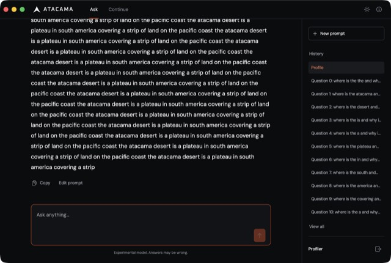
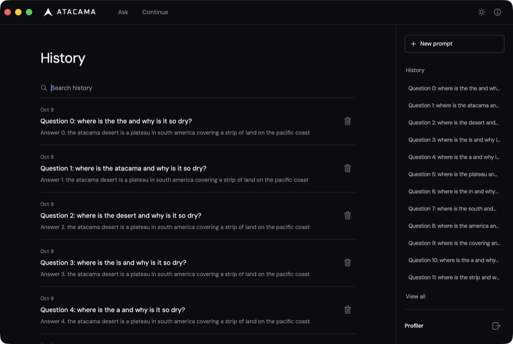
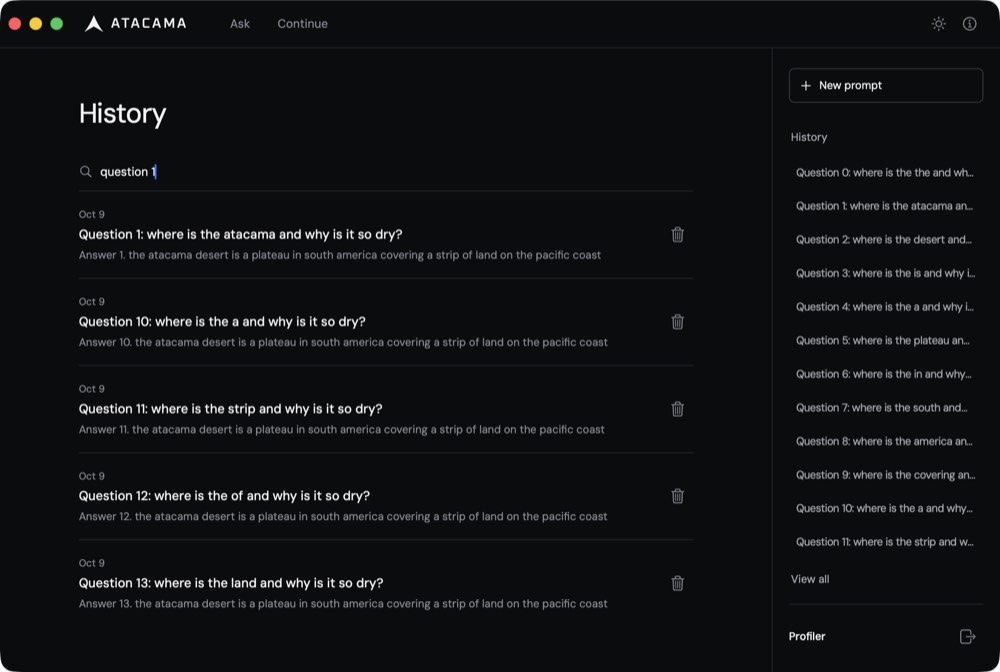
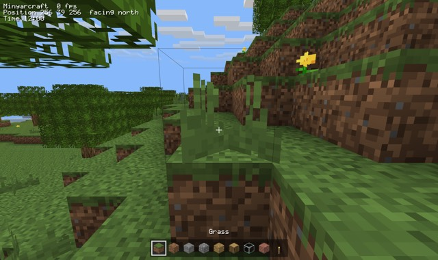
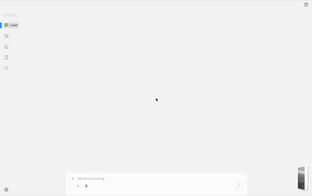

Branch v2 on origin (4de8a8b). The full report is MORNING.md at the repository root, and the evidence for every change is in docs/v2-performance.md.
Retired instructions of the process, from real runs on this machine. Each bar is now / start for one workload. Hover a bar for both numbers.
| Workload | Start | Now | Now / start |
|---|
docs/v2-performance.md| # | Problem | Fix | Before | After | Gain |
|---|---|---|---|---|---|
| 1 | Atacama history: every search keystroke rebuilt a stack of views per row | macos.list, a virtualized NSTableView | 112.6G instructions, 11.4 s CPU | 11.0G, 1.8 s CPU | 10.2x |
| 2 | Atacama streaming: each network chunk re-laid out the whole answer | background wake-ups capped at 60 Hz in macos.nextEvent | 60.5G instructions, 6.8 s CPU | 14.0G, 2.0 s CPU | 4.3x |
| 3 | Every function, even a one-line accessor, called the runtime's call-depth guard, so LLVM never inlined hot leaves | leaf functions carry no call-depth frame | Minyarcraft world build 32.1G instructions; compiler self-compile 91M | 25.6G; 81M | -20%; -11% |
| 4 | record.field[i] = v retained, registered and released the field on every store | no borrow when the rest of the statement makes no call | Minyarcraft 25.6G | 17.3G | -32% |
| 5 | record.text = record.text + piece copied the whole Text each time (quadratic) | in-place append when the record holds the only other reference | 80,000 appends 4.11G | 79.8M | 51x (and linear) |
| 6 | Compiling multi-module programs spent 27% of its time comparing symbol names character by character | symbol tables ordered by length, then from the last character | OS kernel compile 485M; Minyarcraft 109M; Atacama 80.5M | 342M; 71.4M; 58.1M | -28% to -35% |
| 7 | json.parse built every string from a parts list, a slice and a join | one slice when a string has no escapes | 20 parses of a 143 KB history response 1.22G | 0.95G | -22% |
| 8 | Every macOS app build recompiled the Objective-C bridges (macos.m 0.46 s, http.m 0.12 s) | content-keyed object cache, already used for graphics.c, now for every native bridge | Atacama default build 0.93-1.11 s; release app 1.86-2.41 s | 0.48 s; 1.39-1.46 s | about 2x |
| 9 | Minyarcraft's GPU vertex buffers dominated its memory (40-byte float vertices, six per quad) | 32-byte vertices (Float16 colour and light) and graphics.updateQuads (four vertices per quad, shared indices) | peak RSS 602 MB, footprint 892 MB, 17.30G instructions | 419 MB, 697-725 MB, 16.44G | -30% RSS, -5% instructions |
| 11 | The compiler missed its self-compile budget: Text comparisons with literals were calls, and the 1.9 MB output was joined before being written | Inline length check for Text equality; writeTextFile(path, List<Text>); a shorter call-depth guard | self-compile 80.40M instructions, 10.81 MiB; Minyarcraft 16.44G | 72.18M, 9.23 MiB; 15.74G | -10% and -15% (budget met); -4.3% |
| 12 | Lists of a self-referential record (such as json.Value) could only grow by copying: items = items.appended(v) was quadratic | x = x.appended(e) moves x's owner into the append, and a List with no other owner grows in place | 500-run history, 20 parses: 1.115G; 5,000 runs, 2 parses: 3.06G | 0.836G; 0.756G | -25%; 4.0x (linear) |
| 13 | Minyarcraft frames: each of the 276 chunk draws a frame (plus water) looked up and re-sent seven uniforms, and each water draw toggled blending, so the GL driver kept revalidating its state | uniform locations cached at link time; uniforms, program, texture, opacity and blending changed only when they differ | 15.7M instructions per idle frame | 8.05M | -49% per frame |
| 14 | The call-depth guard in every non-leaf function was about 20 instructions, and meshing inlines dozens of small guarded functions per block | the guard's common path is two comparisons; the exact checks moved to a cold path | world build 15.65G; one block edit 28.7M | 14.19G; 25.8M | -9.3%; -10% |
| 15 | Small functions that only call unchecked functions still paid the call-depth check (Minyarcraft's meshing helpers) | two levels of such functions above the leaves drop their check | --benchmark build 13.66G; edit 33.35G | 9.86G; 25.40G | -28%; -24% |
| 16 | Release builds used full LTO | ThinLTO for --release and for the compiler | Minyarcraft 15.73-15.81G; JSON 0.834G; self-compile 71.95M | 14.90-14.94G; 0.806G; 70.55M | -5.5%; -3%; -2% |
| 17 | Atacama streaming: the answer label measured, typeset and drew all of its text every frame | macos.textView and appendText (TextKit 1), no text checking in read-only text, no URL cache in http, buttons skip drawing outside their bounds | 12,000-delta answer 123.0G instructions, 14.0-14.2 s CPU; 3,000 deltas 14.3-15.0G | 11.8-12.3G, 3.3-4.1 s CPU; 3.5-3.7G | 10.2x; 4.0x |
| 18 | Minyarcraft's mesh writer called into the runtime for each 32-byte vertex, which zeroed the bytes before they were written | minyar_native_bytes_append, an inline append in the native header that writes in place while capacity lasts | --benchmark build 9.85-9.87G; edit 25.06-25.20G | 9.53-9.54G; 24.24-24.26G | -3.3%; -3.5% |
| 19 | Atacama history: each search keystroke built every visible list cell again, buttons included, because reloadData discards the cells on screen instead of queueing them for reuse | a list keeps the cells it had on screen and hands them back on reload | search over 500 runs 10.38-10.39G instructions, 1.69-1.74 s CPU | 6.35-6.36G, 0.89-0.94 s | -39% |



macos.list, reused cells).
--screenshot noon on the final build: 10.46G instructions, 664-671 MB peak footprint.
port/astra-cycles-v2: JSON parsing +6-9%, Minyarcraft and the compiler within noise, self-referential chains +13-15%. Recommendation: merge once its cycle suites pass, if cyclic data is wanted soon.free reads the clock (12% of JSON parsing). The lazy profile parsed the same history in 25% fewer instructions, and Atacama and Minyarcraft were unchanged under it. Recommendation: make lazy the default after one full suite run with it.http on macOS no longer caches: the URL cache made streaming quadratic and wrote responses to disk. Recommendation: keep it off.v2-list then v2-stream. Recommendation: merge v2-stream; check Look Up and Writing Tools on the answer text.docs/v2-reconciliation.md. Recommendation: delete them and move the data out. Nothing was deleted.v2 is pushed to origin at 4de8a8b with MORNING.md. On the final code these all passed: modules, regressions, http, tls, macos (after one flaky rerun), graphics-render, codegen, incremental modules, stack overflow and limits, budget (72.1M of 75M), ownership, peer-semantics, three of four peer-sanitize suites, native-bytes, native-graphics and toolchain-portability. A clean check-portable rerun is the one thing not done, because another session's run collided with it. The earlier push (465c8fa) was green on every suite.